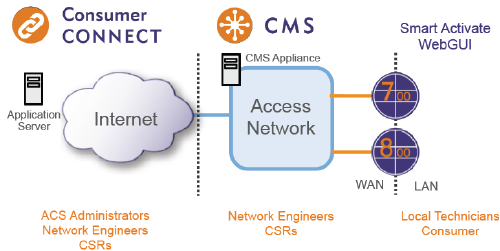

Table of Contents
1 Calix E7/E3-48C/E5-48/E5-48C R2.4 Engineering and Planning Guide
1.1 GPON Subscriber Access
1.1.1 Home Gateway Overview
- Configuration File Process Flow
- HGW Management Interfaces
The following example graphic shows a configuration where P-Series ONTs are automatically created on the GPON system using SmartActivate.

- TR-069 and Consumer Connect Auto Configuration Server
- The TR-069 client can be configured to run in the following management modes:
- In-band runs on an existing WAN interface. Typically, the path to the ACS server utilizes an existing RG service, such as Gateway Service: 1 (HSI).
- Out-of-band runs on its own WAN interface. An independent VLAN outside of the service VLANs is provisioned on HGW ONTs to facilitate communication to the ACS service.
- The TR-069 client can be configured to run in the following management modes:
- TR-069 and Consumer Connect Auto Configuration Server